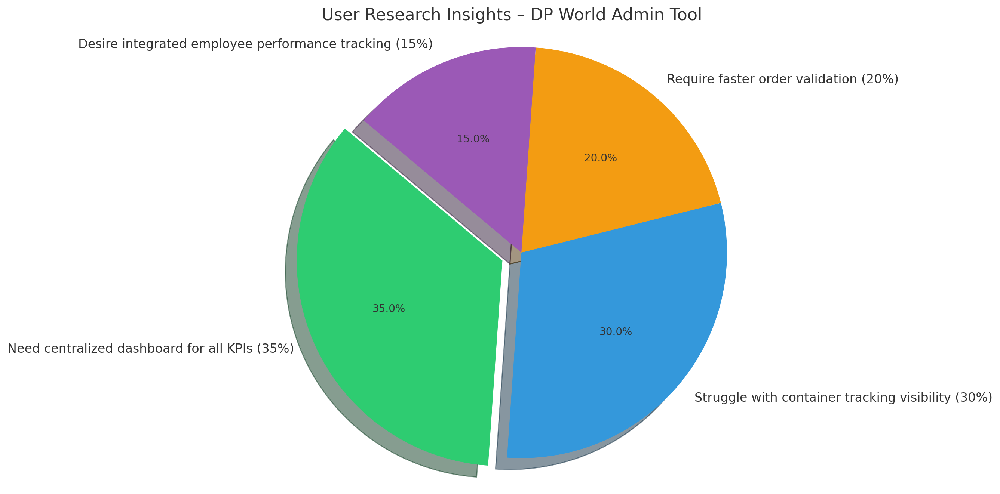

DP World – Container Tracking & Admin Tool (UX Case Study)
Project Overview
The DP World Tool was designed to streamline container logistics, employee tracking, and admin operations for terminal teams. It brings real-time visibility and operational control to admins managing container offloading, truck assignment, sales data, and workforce performance.
Problem Statement
Lack of centralized visibility into container movement, employee attendance, and sales performance created confusion and inefficiency. The goal was to deliver a digital dashboard that merged operations, data tracking, and reporting in one seamless interface.
Key Requirements
- Live dashboard of monthly/yearly sales and total revenue with filtering.
- Order creation forms with validation and prerequisites.
- Punch-based employee attendance tracking + analytics.
- Live container journey tracking (offloaded to final destination).
User Research
We interviewed future DP World staff and admins to understand their daily workflows, bottlenecks, and data needs. Insights were synthesized through:
- Competitive Benchmarking
- Surveys of internal staff
- User Interviews (port operations, IT admins)
- Persona Development
This helped prioritize features such as pre-filled order forms, automated best-performer scoring, and filterable datatables across views.

User Persona: Rakesh Yadav
Age: 42 Role: Operations Manager, Port Admin


Information Architecture
- Dashboard: Live sales, revenue, employee stats
- Order Management: Form builder, validation, approval
- Container Tracking: Journey map, filter by zone/status
- Employee Tracker: Punch logs, performance leaderboard
- Admin Settings: API configs, access control, reports
UX Process & Testing
Our design team (3 members) collaborated in Figma, iterating across low and high fidelity wireframes. Clickable prototypes were tested in three cycles with operations staff. Key test metrics included:
- Form completion time
- KPI visibility and comprehension
- Navigation clarity for non-technical users
Final UI Design Highlights
- Color-coded indicators for performance and shipment status
- Grid views with Excel-like filtering for all major tables
- Compact, scroll-free dashboard layout with tabs
✅ Conclusion
The DP World Tool improved visibility, decision-making, and admin control across operations. By automating reporting, enabling live tracking, and integrating API touchpoints, we delivered a seamless solution that’s now being scaled to more ports.